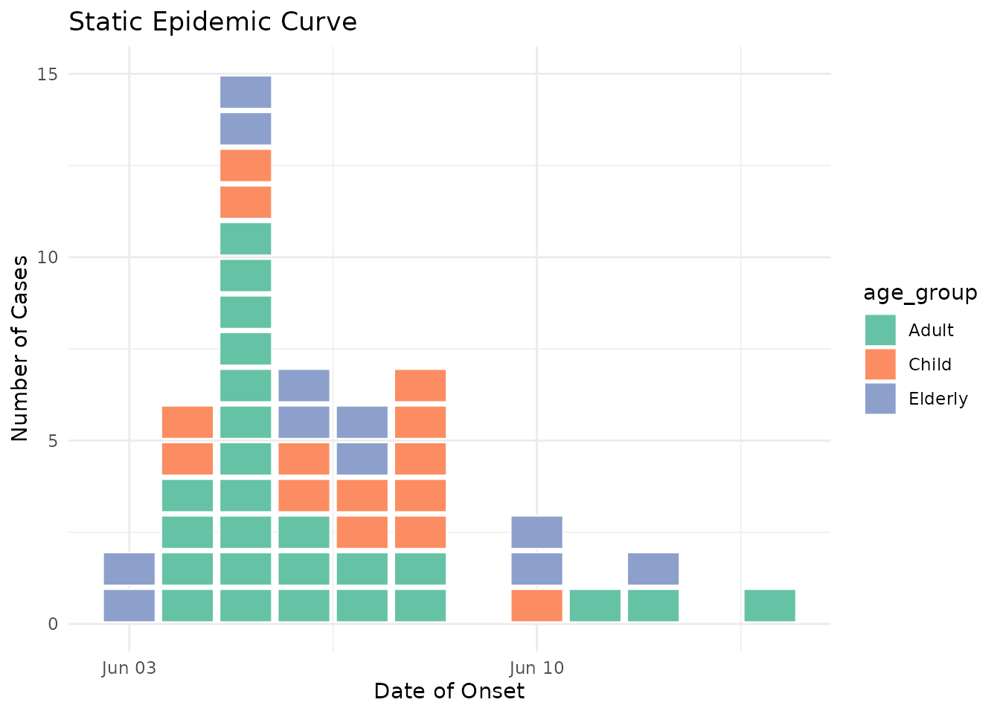

Interactive Epidemic Curves with Plotly
Source:vignettes/interactive-epicurves.Rmd
interactive-epicurves.RmdOverview
Custom ggplot2 geoms like geom_epicurve() are not
directly compatible with ggplotly() conversion. Instead, we
can create interactive epidemic curves using plotly’s native functions.
This vignette shows how to build interactive epidemic curves with custom
tooltips using plotly directly.
Basic Interactive Example
library(paulmisc)
library(ggplot2)
library(plotly)
#>
#> Attaching package: 'plotly'
#> The following object is masked from 'package:ggplot2':
#>
#> last_plot
#> The following object is masked from 'package:stats':
#>
#> filter
#> The following object is masked from 'package:graphics':
#>
#> layout
# Generate example outbreak data
cases <- simulate_outbreak(n = 50, seed = 123)First, let’s compute the stacking positions and create a basic interactive epidemic curve:
# Compute stacking positions (y values) for each case
cases <- cases[order(cases$onset_date), ]
cases$y <- ave(seq_len(nrow(cases)), cases$onset_date, FUN = seq_along)
# Add custom tooltip text
cases$tooltip <- paste0(
"Case ID: ", cases$case_id, "<br>",
"Date: ", cases$onset_date, "<br>",
"Age: ", cases$age_group, "<br>",
"Sex: ", cases$sex
)
# Create interactive plotly plot with rectangles
plot_ly(cases) %>%
add_trace(
type = "scatter",
mode = "markers",
x = ~onset_date,
y = ~y,
marker = list(
symbol = "square",
size = 20,
color = "steelblue",
line = list(color = "white", width = 1)
),
text = ~tooltip,
hovertemplate = "%{text}<extra></extra>"
) %>%
layout(
title = "Interactive Epidemic Curve",
xaxis = list(title = "Date of Onset"),
yaxis = list(title = "Number of Cases"),
hovermode = "closest"
)Hover over any square to see the details for that individual case!
Interactive by Age Group
Now let’s colour by age group and customise the tooltips further:
# Enhanced tooltip with more detail
cases$tooltip <- paste0(
"<b>Case ", cases$case_id, "</b><br>",
"Date: ", format(cases$onset_date, "%d %B %Y"), "<br>",
"Age Group: ", cases$age_group, "<br>",
"Sex: ", cases$sex, "<br>",
"Setting: ", cases$setting, "<br>",
"Outcome: ", cases$outcome
)
# Colour palette for age groups
age_colors <- c(
"0-4" = "#66C2A5",
"5-17" = "#FC8D62",
"18-64" = "#8DA0CB",
"65+" = "#E78AC3"
)
# Create interactive plotly plot coloured by age group
plot_ly(cases) %>%
add_trace(
type = "scatter",
mode = "markers",
x = ~onset_date,
y = ~y,
color = ~age_group,
colors = age_colors,
marker = list(
symbol = "square",
size = 20,
line = list(color = "white", width = 1)
),
text = ~tooltip,
hovertemplate = "%{text}<extra></extra>"
) %>%
layout(
title = "Interactive Epidemic Curve by Age Group",
xaxis = list(title = "Date of Onset"),
yaxis = list(title = "Number of Cases"),
hovermode = "closest"
)
#> Warning: Some values were outside the color scale and will be treated as NA
#> Some values were outside the color scale and will be treated as NA
#> Some values were outside the color scale and will be treated as NA
#> Some values were outside the color scale and will be treated as NA
#> Some values were outside the color scale and will be treated as NA
#> Some values were outside the color scale and will be treated as NAInteractive by Sex
Let’s colour by sex with custom colours:
# Create interactive plotly plot coloured by sex
plot_ly(cases) %>%
add_trace(
type = "scatter",
mode = "markers",
x = ~onset_date,
y = ~y,
color = ~sex,
colors = c("Male" = "#0072B2", "Female" = "#D55E00"),
marker = list(
symbol = "square",
size = 20,
line = list(color = "white", width = 1)
),
text = ~tooltip,
hovertemplate = "%{text}<extra></extra>"
) %>%
layout(
title = "Interactive Epidemic Curve by Sex",
xaxis = list(title = "Date of Onset"),
yaxis = list(title = "Number of Cases"),
hovermode = "closest"
)Customising Tooltip Content
You have complete control over tooltip content. Here’s an example with rich HTML formatting:
# Create highly customised tooltips with HTML formatting
cases$tooltip <- with(cases, paste0(
"<b style='font-size:14px'>Case ", case_id, "</b><br>",
"<hr style='margin:2px'>",
"<i>Date:</i> ", format(onset_date, "%d %B %Y"), "<br>",
"<i>Demographics:</i> ", age_group, ", ", sex, "<br>",
"<i>Setting:</i> ", setting, "<br>",
"<i>Outcome:</i> ", outcome
))
# Colour palette for outcomes
outcome_colors <- c(
"Recovered" = "#FBB4AE",
"Hospitalised" = "#B3CDE3",
"Fatal" = "#CCEBC5"
)
# Create interactive plotly plot coloured by outcome
plot_ly(cases) %>%
add_trace(
type = "scatter",
mode = "markers",
x = ~onset_date,
y = ~y,
color = ~outcome,
colors = outcome_colors,
marker = list(
symbol = "square",
size = 20,
line = list(color = "white", width = 1)
),
text = ~tooltip,
hovertemplate = "%{text}<extra></extra>"
) %>%
layout(
title = "Interactive Epidemic Curve by Outcome",
xaxis = list(title = "Date of Onset"),
yaxis = list(title = "Number of Cases"),
hovermode = "closest"
)Tips for Interactive Visualisation
- Performance: Interactive plots with many cases (>500) may be slow. Consider aggregating or filtering for large datasets.
-
Tooltip formatting: Use HTML tags
(
<br>,<b>,<i>,<hr>) for rich formatting in plotly tooltips. - Mobile devices: Interactive features work on touch devices - tap to see tooltips.
- Export: Use plotly’s built-in export button to save static images of your interactive plots.
-
Static plots: For non-interactive reports, use
geom_epicurve()with ggplot2 as shown in the main package README.
Combining with ggplot2
For static (non-interactive) epidemic curves with the authentic “one
square per case” look, use the geom_epicurve()
function:
ggplot(cases, aes(x = onset_date, fill = age_group)) +
geom_epicurve() +
scale_fill_brewer(palette = "Set2") +
labs(
title = "Static Epidemic Curve",
x = "Date of Onset",
y = "Number of Cases"
) +
theme_minimal()
The static version using geom_epicurve() provides
precise control over spacing and alignment that works perfectly for
printed reports and publications.
More Information
For more details on plotly customisation, see the plotly for R documentation.